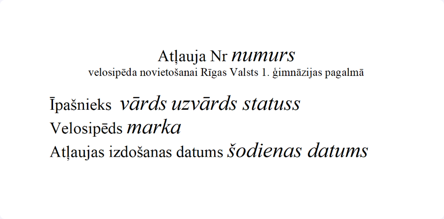
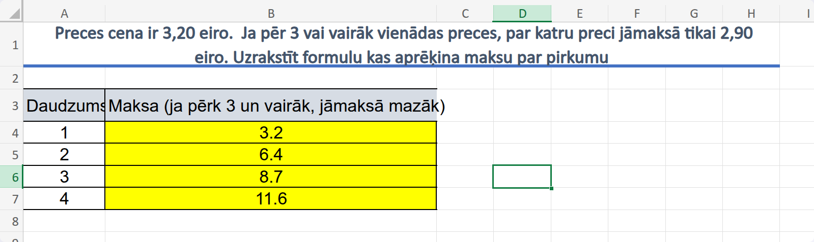
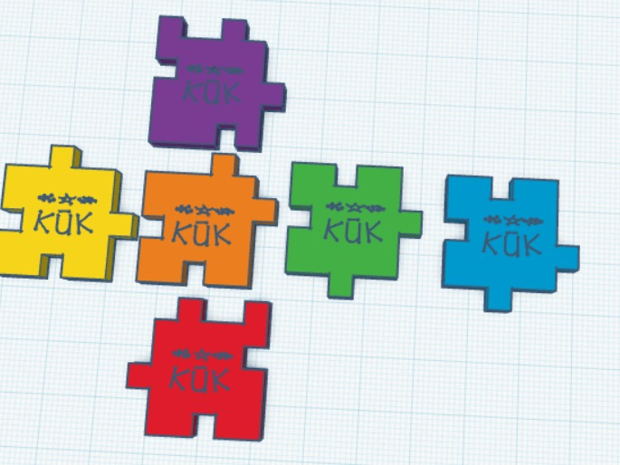

Rastrgrafika
Es iemācījos pievienot efektus, mainīt kontrastu, dzēst objektus, veidot GIF animācijas programmā GIMP.

Es iemācījos pievienot efektus, mainīt kontrastu, dzēst objektus, veidot GIF animācijas programmā GIMP.
Es iemācījos veidot bezier curves, kvadrātus, ovālus un 3d objektus programmā Inkscape.
Es iemācījos veidot veidnes, apstrādāt tekstu, veidot tabulas, zīmējumus un satura rādītājus programmā Word.
Es iemācījos veidot formulas un grafikus programmā Excel.
Es iemācījos lietot Tinkercad programmu, lai izveidotu 3D kuba modeli ar logo.
Es iemācījos lietot CapCut programmu, lai izveidotu 3D kuba izstrādāšanas procesa video.